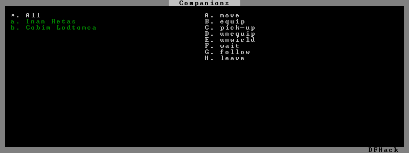
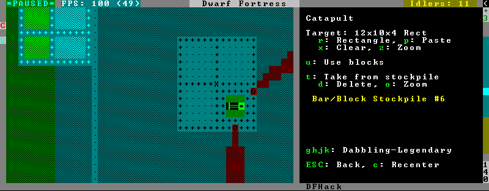
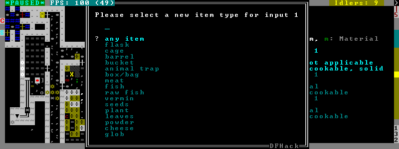

GUI Scripts¶
gui/* scripts implement dialogs in the main game window.
In order to avoid user confusion, as a matter of policy all these tools display the word DFHack on the screen somewhere while active. When that is not appropriate because they merely add keybinding hints to existing DF screens, they deliberately use red instead of green for the key.
Contents
gui/advfort¶
This script allows performing jobs in adventure mode. For more complete help press ? while the script is running. It’s most comfortable to use this as a keybinding (see below for the default binding). Possible arguments:
-a,--nodfassign:uses a different method to assign job items, instead of relying on DF.
-i,--inventory:checks inventory for possible items to use in the job.
-c,--cheat:relaxes item requirements for buildings (e.g. walls from bones). Implies -a
-e [NAME],--entity [NAME]:uses the given civ to determine available resources (specified as an entity raw ID). Defaults to
MOUNTAIN; if the entity name is omitted, uses the adventurer’s civ
job: selects the specified job (must be a validjob_type, e.g.DigorFellTree)
Warning
changes only persist in non-procedural sites, namely player forts, caves, and camps.
An example of a player digging in adventure mode:

Keybinding: CtrlT in dungeonmode
gui/advfort_items¶
A module to support item handling in gui/advfort - not intended to be called directly.
gui/assign-rack¶
This script requires a binpatch, which has not been available since DF 0.34.11
See Bug 1445 for more info about the patches.
Keybinding: P in dwarfmode/QueryBuilding/Some/Weaponrack
gui/autobutcher¶
An in-game interface for autobutcher. This script must be called from either the overall status screen or the animal list screen.
Keybinding: ShiftB in pet/List/Unit
gui/autogems¶
A frontend for the autogems plugin that allows configuring the gem types to be cut.
The following controls apply to the gems currently listed:
s: Searches for matching gemsShift+Enter: Toggles the status of all listed gems
The following controls apply to the gems currently listed, as well as gems listed
before the current search with s, if applicable:
r: Displays only “rock crystal” gemsc: Displays only gems whose color matches the selected gemm: Displays only gems where at least one rough (uncut) gem is available somewhere on the map
This behavior is intended to allow for things like a search for “lazuli”
followed by pressing c to select all gems with the same color as lapis
lazuli (5 blue gems in vanilla DF), rather than further restricting that to gems
with “lazuli” in their name (only 1).
x clears all filters, which is currently the only way to undo filters
(besides searching), and is useful to verify the gems selected.
gui/choose-weapons¶
Activate in the Equip->View/Customize page of the military screen.
Depending on the cursor location, it rewrites all ‘individual choice weapon’ entries in the selected squad or position to use a specific weapon type matching the assigned unit’s top skill. If the cursor is in the rightmost list over a weapon entry, it rewrites only that entry, and does it even if it is not ‘individual choice’.
Rationale: individual choice seems to be unreliable when there is a weapon shortage, and may lead to inappropriate weapons being selected.
Keybinding: CtrlW in layer_military/Equip/Customize/View
gui/clone-uniform¶
When invoked, the script duplicates the currently selected uniform template, and selects the newly created copy. Activate in the Uniforms page of the military screen with the cursor in the leftmost list.
Keybinding: CtrlC in layer_military/Uniforms
gui/color-schemes¶
An in-game interface for color-schemes. This script must be called from either the title screen or the dwarf fortress default screen.
gui/companion-order¶
A script to issue orders for companions. Select companions with lower case chars (green when selected), issue orders with upper case. Must be in look or talk mode to issue command on tile (e.g. move/equip/pick-up).
move - orders selected companions to move to location. If companions are following they will move no more than 3 tiles from you.
equip - try to equip items on the ground.
pick-up - try to take items into hand (also wield)
unequip - remove and drop equipment
unwield - drop held items
wait - temporarily remove from party
follow - rejoin the party after “wait”
leave - remove from party (can be rejoined by talking)
Can be called with ‘-c’ flag to display “cheating” commands.
patch up - fully heals the companion
get in - rides e.g. minecart at cursor. Bit buggy as unit will teleport to the item when e.g. pushing it.
Keybinding: ShiftO in dungeonmode
gui/confirm-opts¶
A basic configuration interface for the confirm plugin.
gui/cp437-table¶
An in-game CP437 table. Allows typing or selecting characters with the mouse. Input is fed directly to the parent screen when “enter” is pressed, so there should be a text field selected before running this script.
gui/create-item¶
A graphical interface for creating items.
See also: createitem, modtools/create-item, Issue 735
gui/create-tree¶
A graphical interface for creating trees.
Place the cursor wherever you want the tree to appear and run the script. Then select the desired tree type from the list. You will then be asked to input the desired age of the tree in years. If omitted, the age will default to 1.
gui/dfstatus¶
Show a quick overview of critical stock quantities, including food, drinks, wood, and various bars.
Sections can be enabled/disabled/configured by editing dfhack-config/dfstatus.lua.
Keybinding: CtrlShiftI in dwarfmode/Default
Keybinding: CtrlShiftI in dfhack/lua/dfstatus
gui/extended-status¶
Adds more subpages to the z status screen.
Usage:
gui/extended-status enable|disable|help|subpage_names
enable|disable gui/extended-status
gui/family-affairs¶
A user-friendly interface to view romantic relationships, with the ability to add, remove, or otherwise change them at your whim - fantastic for depressed dwarves with a dead spouse (or matchmaking players…).
The target/s must be alive, sane, and in fortress mode.
gui/family-affairs [unitID]shows GUI for the selected unit, or the specified unit ID
gui/family-affairs divorce [unitID]removes all spouse and lover information from the unit and it’s partner, bypassing almost all checks.
gui/family-affairs [unitID] [unitID]divorces the two specified units and their partners, then arranges for the two units to marry, bypassing almost all checks. Use with caution.
gui/gm-editor¶
This editor allows to change and modify almost anything in df. Press ? for in-game help. There are multiple ways to open this editor:
Calling
gui/gm-editorfrom a command or keybinding opens the editor on whatever is selected or viewed (e.g. unit/item description screen)using
gui/gm-editor <lua command>- executes lua command and opens editor on its results (e.g.gui/gm-editor "df.global.world.items.all"shows all items)using
gui/gm-editor dialog- shows an in game dialog to input lua command. Works the same as version above.using
gui/gm-editor toggle- will hide (if shown) and show (if hidden) editor at the same position you left it
gui/gm-unit¶
An editor for various unit attributes.
gui/guide-path¶
Activate in the Hauling menu with the cursor over a Guide order.

The script displays the cached path that will be used by the order; the game computes it when the order is executed for the first time.
Keybinding: AltP in dwarfmode/Hauling/DefineStop/Cond/Guide
gui/hack-wish¶
An alias for gui/create-item. Deprecated.
gui/hello-world¶
A basic example for testing, or to start your own script from.
gui/liquids¶
This script is a gui front-end to liquids and works similarly, allowing you to add or remove water & magma, and create obsidian walls & floors.
Warning
There is no undo support. Bugs in this plugin have been known to create pathfinding problems and heat traps.
The b key changes how the affected area is selected. The default Rectangle mode works by selecting two corners like any ordinary designation. The p key chooses between adding water, magma, obsidian walls & floors, or just tweaking flags.
When painting liquids, it is possible to select the desired level with +-, and choose between setting it exactly, only increasing or only decreasing with s.
In addition, f allows disabling or enabling the flowing water computations for an area, and r operates on the “permanent flow” property that makes rivers power water wheels even when full and technically not flowing.
After setting up the desired operations using the described keys, use Enter to apply them.
Keybinding: AltL in dwarfmode/LookAround
gui/load-screen¶
A replacement for the “continue game” screen.
Usage: gui/load-screen enable|disable
The primary view is a list of saved games, much like the default list provided by DF. Several filter options are available:
s: search for folder names containing specific text
t: filter by active game type (e.g. fortress, adventurer)
b: toggle display of backup folders, as created by DF’s
AUTOBACKUPoption (see data/init/init.txt for a detailed explanation). This defaults to hiding backup folders, since they can take up significant space in the list.
When selecting a game with Enter, a dialog will give options to load the
selected game (Enter again), cancel (Esc), or rename the game’s
folder (r). See the title-start-rename tweak to rename folders in
the “start playing” menu.
gui/manager-quantity¶
Sets the quantity of the selected manager job (in the j-m or u-m screens).
Keybinding: AltQ in jobmanagement/Main
gui/mechanisms¶
Lists mechanisms connected to the building, and their links. Navigating the list centers the view on the relevant linked buildings.

To exit, press Esc or Enter; Esc recenters on the original building, while Enter leaves focus on the current one. ShiftEnter has an effect equivalent to pressing Enter, and then re-entering the mechanisms UI.
Keybinding: CtrlM in dwarfmode/QueryBuilding/Some
gui/mod-manager¶
A simple way to install and remove small mods, which are not included in DFHack. Examples are available here.
Each mod is a lua script located in <DF>/mods/, which MUST define
the following variables:
- name
a name that is displayed in list
- author
mod author, also displayed
- description
a description of the mod
Of course, this doesn’t actually make a mod - so one or more of the following should also be defined:
- raws_list
a list (table) of file names that need to be copied over to df raws
- patch_entity
a chunk of text to patch entity TODO: add settings to which entities to add
- patch_init
a chunk of lua to add to lua init
- patch_dofile
a list (table) of files to add to lua init as “dofile”
- patch_files
a table of files to patch
- filename
a filename (in raws folder) to patch
- patch
what to add
- after
a string after which to insert
- guard
a token that is used in raw files to find additions and remove them on uninstall
- guard_init
a token for lua file
- [pre|post]_(un)install
Callback functions, which can trigger more complicated behavior
gui/no-dfhack-init¶
Shows a warning at startup if no valid dfhack.init file is found.
gui/pathable¶
Highlights each visible map tile to indicate whether it is possible to path to from the tile at the cursor - green if possible, red if not, similar to gui/siege-engine. A few options are available:
l: Lock cursor: when enabled, the movement keys move around the map instead of moving the cursor. This is useful to check whether parts of the map far away from the cursor can be pathed to from the cursor.
d: Draw: allows temporarily disabling the highlighting entirely.
u: Skip unrevealed: when enabled, unrevealed tiles will not be highlighed at all. (These would otherwise be highlighted in red.)
Note
This tool uses a cache used by DF, which currently does not account for climbing. If an area of the map is only accessible by climbing, this tool may report it as inaccessible. Care should be taken when digging into the upper levels of caverns, for example.
Keybinding: AltShiftP in dwarfmode/LookAround
gui/power-meter¶
Activate an in-game interface for power-meter after selecting Pressure Plate in the build menu.
The script follows the general look and feel of the regular pressure plate build configuration page, but configures parameters relevant to the modded power meter building.
Keybinding: CtrlShiftM in dwarfmode/Build/Position/Trap
gui/prerelease-warning¶
Shows a warning on world load for pre-release builds.
With no arguments passed, the warning is shown unless the “do not show again”
option has been selected. With the force argument, the warning is always
shown.
gui/quickcmd¶
A list of commands which you can edit while in-game, and which you can execute quickly and easily. For stuff you use often enough to not want to type it, but not often enough to be bothered to find a free keybinding.
gui/quickfort¶
In-game dialog interface for the quickfort script. Any arguments passed to
this script are passed directly to quickfort. Invoking this script without
arguments is equivalent to running quickfort gui.
Examples:
Command |
Runs |
|---|---|
gui/quickfort |
opens quickfort interactive dialog |
gui/quickfort gui |
same as above |
gui/quickfort gui –library dreamfort |
opens the dialog with custom settings |
gui/quickfort help |
prints quickfort help (on the console) |
gui/rename¶
Backed by rename, this script allows entering the desired name via a simple dialog in the game ui.
gui/rename [building]in q mode changes the name of a building.The selected building must be one of stockpile, workshop, furnace, trap, or siege engine. It is also possible to rename zones from the i menu.
gui/rename [unit]with a unit selected changes the nickname.Unlike the built-in interface, this works even on enemies and animals.
gui/rename unit-professionchanges the selected unit’s custom profession name.
Likewise, this can be applied to any unit, and when used on animals it overrides their species string.
The building or unit options are automatically assumed when in relevant UI state.
Keybinding: CtrlShiftN
Keybinding: CtrlShiftT -> "gui/rename unit-profession"
gui/room-list¶
Activate in q mode, either immediately or after opening the assign owner page.

The script lists other rooms owned by the same owner, or by the unit selected in the assign list, and allows unassigning them.
Keybinding: AltR in dwarfmode/QueryBuilding/Some
gui/settings-manager¶
An in-game manager for settings defined in init.txt and d_init.txt.
Keybinding: AltS in title
Keybinding: AltS in dwarfmode/Default
gui/siege-engine¶
Activate an in-game interface for siege-engine, after selecting a siege engine in q mode.
The main mode displays the current target, selected ammo item type, linked stockpiles and the allowed operator skill range. The map tile color is changed to signify if it can be hit by the selected engine: green for fully reachable, blue for out of range, red for blocked, yellow for partially blocked.
Pressing r changes into the target selection mode, which works by highlighting two points with Enter like all designations. When a target area is set, the engine projectiles are aimed at that area, or units within it (this doesn’t actually change the original aiming code, instead the projectile trajectory parameters are rewritten as soon as it appears).
After setting the target in this way for one engine, you can ‘paste’ the same area into others just by pressing p in the main page of this script. The area to paste is kept until you quit DF, or select another area manually.
Pressing t switches to a mode for selecting a stockpile to take ammo from.
Exiting from the siege engine script via Esc reverts the view to the state prior to starting the script. ShiftEsc retains the current viewport, and also exits from the q mode to main menu.
Keybinding: AltA in dwarfmode/QueryBuilding/Some/SiegeEngine
gui/stamper¶
allows manipulation of designations by transforms such as translations, reflections, rotations, and inversion. designations can also be used as brushes to erase other designations and cancel constructions.
gui/stockpiles¶
An in-game interface for stockpiles, to load and save stockpile settings from the q menu.
Usage:
- gui/stockpiles -save
to save the current stockpile
- gui/stockpiles -load
to load settings into the current stockpile
- gui/stockpiles -dir <path>
set the default directory to save settings into
- gui/stockpiles -help
to see this message
Don’t forget to enable stockpiles and create the stocksettings directory in
the DF folder before trying to use the GUI.
Keybinding: AltL -> "gui/stockpiles -load" in dwarfmode/QueryBuilding/Some/Stockpile
Keybinding: AltS -> "gui/stockpiles -save" in dwarfmode/QueryBuilding/Some/Stockpile
gui/teleport¶
A front-end for the teleport script that allows choosing a unit and destination using the in-game cursor.
gui/unit-info-viewer¶
Displays age, birth, maxage, shearing, milking, grazing, egg laying, body size, and death info about a unit.
Keybinding: AltI in dwarfmode/ViewUnits|unitlist
gui/workflow¶
Bind to a key (the example config uses Alt-W), and activate with a job selected in a workshop in q mode.
This script provides a simple interface to constraints managed by workflow. When active, it displays a list of all constraints applicable to the current job, and their current status.
A constraint specifies a certain range to be compared against either individual item or whole stack count, an item type and optionally a material. When the current count is below the lower bound of the range, the job is resumed; if it is above or equal to the top bound, it will be suspended. Within the range, the specific constraint has no effect on the job; others may still affect it.
Pressing i switches the current constraint between counting stacks or items. Pressing r lets you input the range directly; e, r, d, f adjust the bounds by 5, 10, or 20 depending on the direction and the i setting (counting items and expanding the range each gives a 2x bonus).
Pressing a produces a list of possible outputs of this job as guessed by
workflow, and lets you create a new constraint by choosing one as template. If you
don’t see the choice you want in the list, it likely means you have to adjust
the job material first using job item-material or gui/workshop-job,
as described in the workflow documentation. In this manner, this feature
can be used for troubleshooting jobs that don’t match the right constraints.

If you select one of the outputs with Enter, the matching constraint is simply added to the list. If you use ShiftEnter, the interface proceeds to the next dialog, which allows you to edit the suggested constraint parameters to suit your need, and set the item count range.

Pressing s (or, with the example config, Alt-W in the z stocks screen) opens the overall status screen:

This screen shows all currently existing workflow constraints, and allows monitoring and/or changing them from one screen. The constraint list can be filtered by typing text in the field below.
The color of the stock level number indicates how “healthy” the stock level is, based on current count and trend. Bright green is very good, green is good, red is bad, bright red is very bad.
The limit number is also color-coded. Red means that there are currently no workshops producing that item (i.e. no jobs). If it’s yellow, that means the production has been delayed, possibly due to lack of input materials.
The chart on the right is a plot of the last 14 days (28 half day plots) worth of stock history for the selected item, with the rightmost point representing the current stock value. The bright green dashed line is the target limit (maximum) and the dark green line is that minus the gap (minimum).
Keybinding: AltW in dwarfmode/QueryBuilding/Some/Workshop/Job
Keybinding: AltW -> "gui/workflow status" in overallstatus
Keybinding: AltW -> "gui/workflow status" in dfhack/lua/status_overlay
gui/workshop-job¶
Run with a job selected in a workshop in the q mode.

The script shows a list of the input reagents of the selected job, and allows changing
them like the job item-type and job item-material commands.
Specifically, pressing the i key pops up a dialog that lets you select an item type from a list.
Pressing m, unless the item type does not allow a material, lets you choose a material.

Since there are a lot more materials than item types, this dialog is more complex and uses a hierarchy of sub-menus. List choices that open a sub-menu are marked with an arrow on the left.
Warning
Due to the way input reagent matching works in DF, you must select an item type if you select a material, or the material will be matched incorrectly in some cases. If you press m without choosing an item type, the script will auto-choose if there is only one valid choice, or pop up an error message box instead of the material selection dialog.
Note that both materials and item types presented in the dialogs are filtered by the job input flags, and even the selected item type for material selection, or material for item type selection. Many jobs would let you select only one input item type.
For example, if you choose a plant input item type for your prepare meal job, it will only let you select cookable materials.
If you choose a barrel item instead (meaning things stored in barrels, like drink or milk), it will let you select any material, since in this case the material is matched against the barrel itself. Then, if you select, say, iron, and then try to change the input item type, now it won’t let you select plant; you have to unset the material first.
Keybinding: AltA in dwarfmode/QueryBuilding/Some/Workshop/Job